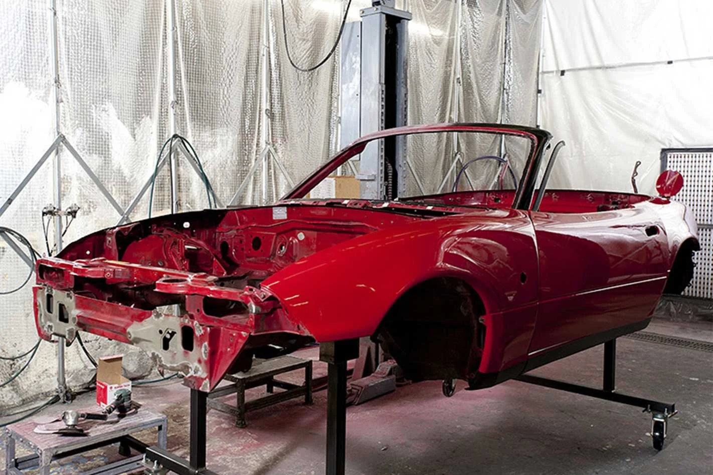

Restoration & Future
About the future ahead and a look at the numbers
In Japan, Mazda themselves offer a 'Factory Restoration Service' including a full vehicle
respray and engine rebuild, and also have continued production of spare parts for this vehicle
which is approaching classic car status in the UK, still available at dealerships across the
country.
The future looks bright for this 2-door sports car as in three years from now, 2029, the first
models off the production line will be approaching 40 years old which will make them both MOT
and Vehicle Tax exempt, which are some of the roadblocks to owners keeping their cars used all
year round.
Below is a table showing how many models are left on the UK roads, both SORN (registered as
off-the-road) & taxed and on the road, the numbers will often fluctuate as some owners may only
tax their car for the summer as it goes back into storage over the winter. UK winters can be
harsh on these cars due to the salted roads leading to expensive rust problems causing issues
obtaining an MOT.

| Year | Licensed | SORN |
|---|---|---|
| 1989 | 73 | 274 |
| 1990 | 674 | 1870 |
| 1991 | 732 | 1841 |
| 1992 | 548 | 1325 |
| 1993 | 545 | 1263 |
| 1994 | 441 | 1078 |
| 1995 | 523 | 1109 |
| 1996 | 514 | 1096 |
| 1997 | 674 | 1259 |
| Totals | 4724 | 11115 |